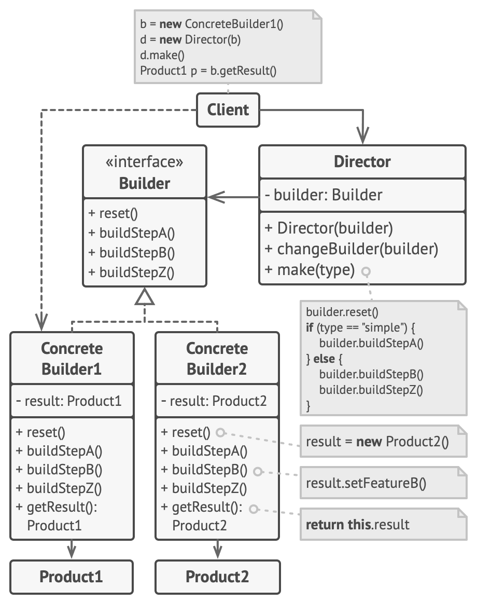
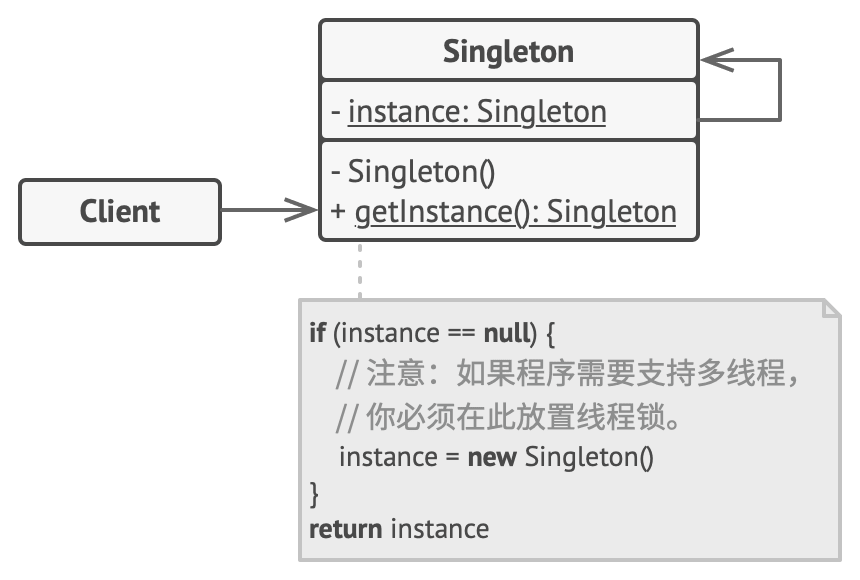
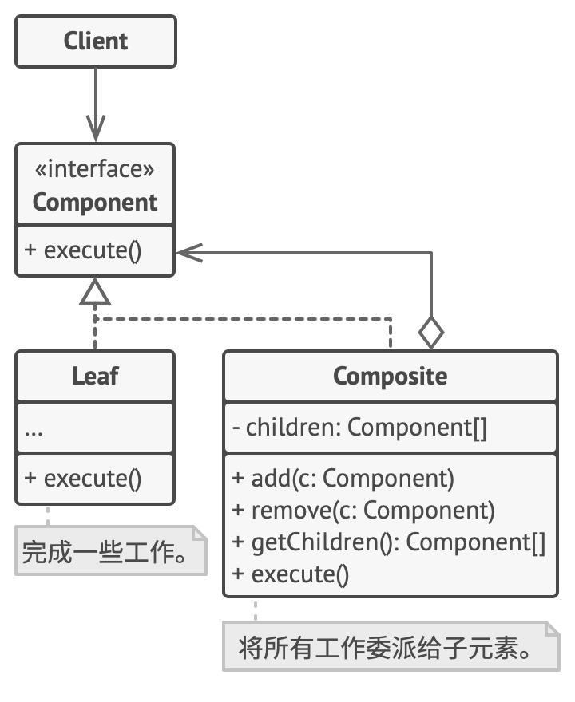
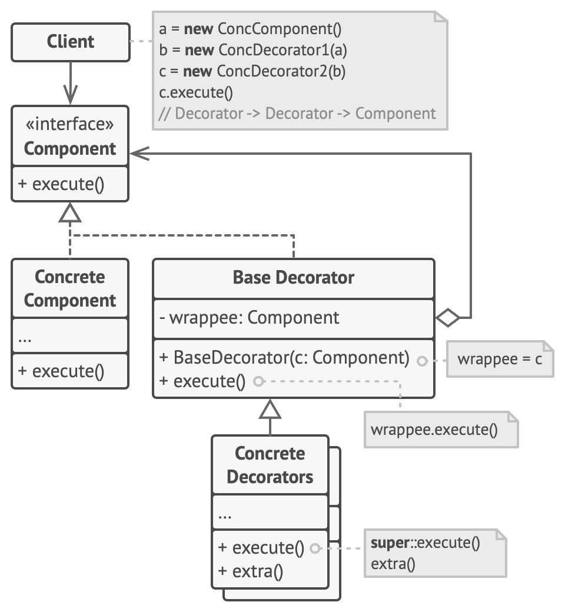
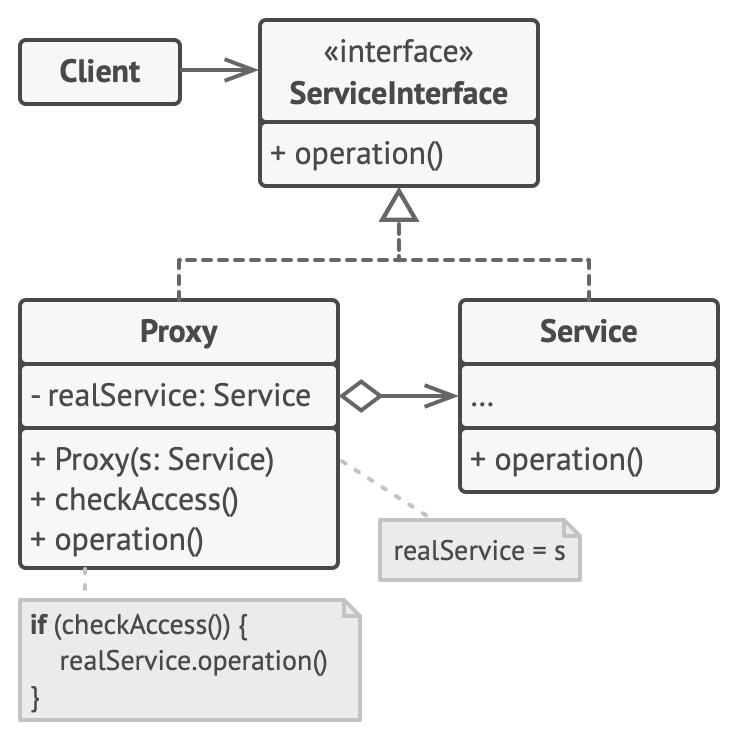

创建型模式
抽象工厂 Abstract Factory
抽象工厂模式是一种创建型设计模式， 它能创建一系列相关的对象， 而无需指定其具体类。

// 两个类，分别是产品类和工厂类
// 工厂类是抽象类，可以实现多种具体工厂
// 产品类也是抽象类，可以实现多种具体产品
// 具体工厂返回具体产品，用户只需要调用抽象工厂的某个函数即可经具体工厂返回产品
class AbstractProduct {
public:
virtual ~AbstractProduct() {};
virtual std::string UsefulFunction() const = 0;
};
class ConcreteProductA : public AbstractProduct {
public:
std::string UsefulFunction() const override {
return "The result of the product A.";
}
};
class ConcreteProductB : public AbstractProduct {
std::string UsefulFunction() const override {
return "The result of the product B.";
}
};
class AbstractFactory {
public:
virtual AbstractProduct* CreateProductA() const = 0;
virtual AbstractProduct* CreateProductB() const = 0;
};
class ConcreteFactory : public AbstractFactory {
public:
AbstractProduct *CreateProductA() const override {
return new ConcreteProductA();
}
AbstractProduct *CreateProductB() const override {
return new ConcreteProductB();
}
};
void ClientCode(const AbstractFactory &factory) {
const AbstractProduct *product_a = factory.CreateProductA();
const AbstractProduct *product_b = factory.CreateProductB();
std::cout << product_a->UsefulFunction() << "\n";
std::cout << product_b->UsefulFunction() << "\n";
delete product_a;
delete product_b;
}工厂模式 Virtual Constructor、Factory Method
工厂方法模式是一种创建型设计模式， 其在父类中提供一个创建对象的方法， 允许子类决定实例化对象的类型。
创建者 （Creator） 类声明返回产品对象的工厂方法。 该方法的返回对象类型必须与产品接口相匹配。用户需要指定返回对象的类型，也就是产品。
Factroy要解决的问题是：希望能够创建一个对象，但创建过程比较复杂，希望对外隐藏这些细节。
工厂方法模式的工厂是创建出一种产品，而抽象工厂是创建出一类产品。
// 用户访问Creator，Creator通过Product间接创建产品。
class Product {
public:
virtual ~Product() {}
virtual std::string Operation() const = 0;
};
class ConcreteProduct1 : public Product {
public:
std::string Operation() const override {
return "{Result of the ConcreteProduct1}";
}
};
class ConcreteProduct2 : public Product {
public:
std::string Operation() const override {
return "{Result of the ConcreteProduct2}";
}
};
class Creator {
public:
virtual ~Creator() {};
virtual Product* FactoryMethod() const = 0;
std::string SomeOperation() const{
Product* product = this->FactoryMethod();
std::string result = "Creator: The same creator's code has just worked with " + product->Operation();
delete product;
return result;
}
};
class ConcreteCreator1 : public Creator {
public:
Product* FactoryMethod() const override {
return new ConcreteProduct1();
}
};
class ConcreteCreator2 : public Creator {
public:
Product* FactoryMethod() const override {
return new ConcreteProduct2();
}
};生成器模式/建造者模式 Builder
生成器模式建议将对象构造代码从产品类中抽取出来， 并将其放在一个名为生成器的独立对象中。
该模式会将对象构造过程划分为一组步骤， 比如 buildWalls创建墙壁和 buildDoor创建房门创建房门等。 每次创建对象时， 你都需要通过生成器对象执行一系列步骤。 无需调用所有步骤， 而只需调用创建特定对象配置所需的那些步骤即可。

// Director决定建造的方式
class Product{
public:
std::vector<std::string> parts_;
void ListParts() const{
std::cout << "Product parts: ";
for (size_t i = 0; i < parts_.size(); i++){
if (parts_[i] == parts_.back()){
std::cout << parts_[i];
}else{
std::cout << parts_[i] << ", ";
}
}
std::cout<< "\n\n";
}
};
class Builder{
public:
virtual ~Builder(){}
virtual void ProducePartA() const =0;
virtual void ProducePartB() const =0;
virtual void ProducePartC() const =0;
};
class ConcreteBuilder : public Builder {
private:
Product* product;
public:
ConcreteBuilder(){
this->Reset();
}
~ConcreteBuilder(){
delete product;
}
void Reset(){
this->product = new Product();
}
void ProducePartA()const override{
this->product->parts_.push_back("PartA");
}
void ProducePartB()const override{
this->product->parts_.push_back("PartB");
}
void ProducePartC()const override{
this->product->parts_.push_back("PartC");
}
Product* GetProduct() {
Product* result= this->product;
this->Reset();
return result;
}
};
class Director{
private:
Builder* builder;
public:
void set_builder(Builder* builder){
this->builder = builder;
}
void BuildMinimalViableProduct(){
this->builder->ProducePartA();
}
void BuildFullFeaturedProduct(){
this->builder->ProducePartA();
this->builder->ProducePartB();
this->builder->ProducePartC();
}
};原型模式 Clone、Prototype
原型模式是一种创建型设计模式， 使你能够复制已有对象， 而又无需使代码依赖它们所属的类。
原型 （Prototype） 接口将对克隆方法进行声明。 在绝大多数情况下， 其中只会有一个名为 clone克隆的方法。
单例模式 Singleton
保证一个类只有一个实例， 并提供一个访问该实例的全局节点。
所有单例的实现都包含以下两个相同的步骤：
- 将默认构造函数设为私有， 防止其他对象使用单例类的 new运算符。
- 新建一个静态构建方法作为构造函数。 该函数会 “偷偷” 调用私有构造函数来创建对象， 并将其保存在一个静态成员变量中。 此后所有对于该函数的调用都将返回这一缓存对象。

class Singleton {
public:
// 一个class只能通过GetInstance创建一个对象
static Singleton* GetInstance() {
if (!instance_){ // 不存在对象才创建
std::lock_guard<std::mutex> lock(lock_); // 通过加锁保证多线程安全
if (!instance_){
instance_ = new Singleton();
}
}
return (Singleton* )instance_;
}
private:
static std::mutex lock_;
static volatile Singleton* instance_;
private:
Singleton() {};
virtual ~Singleton() {};
Singleton(const Singleton& ) = delete;
Singleton& operator=(const Singleton& ) = delete;
};结构型模式
适配器模式是一种结构型设计模式， 它能使接口不兼容的对象能够相互合作。
适配器不仅可以转换不同格式的数据， 其还有助于采用不同接口的对象之间的合作。 它的运作方式如下：
- 适配器实现与其中一个现有对象兼容的接口。
- 现有对象可以使用该接口安全地调用适配器方法。
- 适配器方法被调用后将以另一个对象兼容的格式和顺序将请求传递给该对象。

class Target {
public:
virtual ~Target() = default;
virtual std::string Request() const {
return "Target: The default target's behavior.";
}
};
class Adaptee {
public:
std::string SpecificRequest() const {
return ".eetpadA eht fo roivaheb laicepS";
}
};
class Adapter : public Target {
private:
Adaptee* adaptee_;
public:
Adapter(Adaptee *adaptee) : adaptee_(adaptee) {}
std::string Request() const override {
std::string to_reverse = this->adaptee_->SpecificRequest();
std::reverse(to_reverse.begin(), to_reverse.end());
return "Adapter: (TRANSLATED) " + to_reverse;
}
};
void ClientCode(const Target* target) {
std::cout << target->Request();
}桥接模式 Bridge
桥接模式是一种结构型设计模式， 可将一个大类或一系列紧密相关的类拆分为抽象和实现两个独立的层次结构， 从而能在开发时分别使用。
抽象部分 （Abstraction） 提供高层控制逻辑， 依赖于完成底层实际工作的实现对象。
实现部分 （Implementation） 为所有具体实现声明通用接口。 抽象部分仅能通过在这里声明的方法与实现对象交互。
桥接模式通常会于开发前期进行设计， 使你能够将程序的各个部分独立开来以便开发。 另一方面， 适配器模式通常在已有程序中使用， 让相互不兼容的类能很好地合作。

组合模式 Composite
组合模式是一种结构型设计模式， 你可以使用它将对象组合成树状结构， 并且能像使用独立对象一样使用它们。类似一种层次结构，上层由下层所组成。

装饰器模式 Wrapper、Decorator
装饰模式是一种结构型设计模式， 允许你通过将对象放入包含行为的特殊封装对象中来为原对象绑定新的行为。
当你需要更改一个对象的行为时， 第一个想法就是扩展它所属的类。 但是可能存在几个严重问题。
- 继承是静态的。 你无法在运行时更改已有对象的行为， 只能使用由不同子类创建的对象来替代当前的整个对象。
- 子类只能有一个父类。 大部分编程语言不允许一个类同时继承多个类的行为。
封装器是一个能与目标对象连接的对象。 封装器包含与目标对象相同的一系列方法， 它会将所有接收到的请求委派给目标对象。 但是， 封装器可以在将请求委派给目标前后对其进行处理， 这样就起到了装饰的效果。

具体部件 （Concrete Component） 类是被封装对象所属的类。 它定义了基础行为， 但装饰类可以改变这些行为。
基础装饰 （Base Decorator） 类拥有一个指向被封装对象的引用成员变量。装饰基类会将所有操作委派给被封装的对象。
具体装饰类 （Concrete Decorators） 定义了可动态添加到部件的额外行为。
class Component {
public:
virtual ~Component() {}
virtual std::string Operation() const = 0;
};
class ConcreteComponent : public Component {
public:
std::string Operation() const override {
return "ConcreteComponent";
}
};
class Decorator : public Component {
protected:
Component* component_; // 引用
public:
Decorator(Component* component) : component_(component){}
std::string Operation() const override {
return this->component_->Operation();
}
};
class ConcreteDecoratorA : public Decorator {
public:
ConcreteDecoratorA(Component* component) : Decorator(component) {
}
std::string Operation() const override {
return "ConcreteDecoratorA(" + Decorator::Operation() + ")";
}
};
class ConcreteDecoratorB : public Decorator {
public:
ConcreteDecoratorB(Component* component) : Decorator(component) {
}
std::string Operation() const override {
return "ConcreteDecoratorB(" + Decorator::Operation() + ")";
}
};
void ClientCode(Component* component) {
std::cout << "RESULT: " << component->Operation();
}代理模式
代理模式是一种结构型设计模式， 代理控制着对于原对象的访问， 并允许在将请求提交给对象前后进行一些处理。
代理模式建议新建一个与原服务对象接口相同的代理类， 然后更新应用以将代理对象传递给所有原始对象客户端。

服务接口 （Service Interface） 声明了服务接口。 代理必须遵循该接口才能伪装成服务对象。
代理 （Proxy） 类包含一个指向服务对象的引用成员变量。 代理完成其任务 （例如延迟初始化、 记录日志、 访问控制和缓存等） 后会将请求传递给服务对象。
行为模式
迭代器模式 Iterator
迭代器模式是一种行为设计模式， 让你能在不暴露集合底层表现形式 （列表、 栈和树等） 的情况下遍历集合中所有的元素。
迭代器 （Iterator） 接口声明了遍历集合所需的操作。
集合 （Collection） 接口声明一个或多个方法来获取与集合兼容的迭代器。
具体迭代器 （Concrete Iterators） 实现遍历集合的一种特定算法。
观察者模式 Event-Subscriber、Listener、Observer
观察者模式是一种行为设计模式， 允许你定义一种订阅机制， 可在对象事件发生时通知多个 “观察” 该对象的其他对象。
拥有一些值得关注的状态的对象通常被称为目标， 由于它要将自身的状态改变通知给其他对象， 我们也将其称为发布者 （publisher）。 所有希望关注发布者状态变化的其他对象被称为订阅者 （subscribers）。
所有订阅者都必须实现同样的接口， 发布者仅通过该接口与订阅者交互。 接口中必须声明通知方法及其参数， 这样发布者在发出通知时还能传递一些上下文数据。
发布者持有订阅者接口的列表，可通过列表访问订阅者，例如发布信息。同样每个订阅者持有发布者对象的指针，可调用之实现Attach，Detach等功能。

/// 这种模式，publish具有注册的subsribers的list，publisher 可操作subsribers
/// 每个subsriber具有其对应的publish执行注册等一些操作。
class IObserver {
public:
virtual ~IObserver(){};
virtual void Update(const std::string &message_from_subject) = 0;
};
class ISubject {
public:
virtual ~ISubject(){};
virtual void Attach(IObserver *observer) = 0;
virtual void Detach(IObserver *observer) = 0;
virtual void Notify() = 0;
};
/// 发布者,publisher
class Subject : public ISubject {
public:
virtual ~Subject() {
std::cout << "Goodbye, I was the Subject.\n";
}
/**
* The subscription management methods.
*/
void Attach(IObserver *observer) override {
list_observer_.push_back(observer);
}
void Detach(IObserver *observer) override {
list_observer_.remove(observer);
}
// 广播
void Notify() override {
std::list<IObserver *>::iterator iterator = list_observer_.begin();
HowManyObserver();
/// 调用list_observer_
while (iterator != list_observer_.end()) {
(*iterator)->Update(message_);
++iterator;
}
}
void CreateMessage(std::string message = "Empty") {
this->message_ = message;
Notify();
}
void HowManyObserver() {
std::cout << "There are " << list_observer_.size() << " observers in the list.\n";
}
void SomeBusinessLogic() {
this->message_ = "change message message";
Notify();
std::cout << "I'm about to do some thing important\n";
}
private:
std::list<IObserver *> list_observer_;
std::string message_;
};
class Observer : public IObserver {
public:
/// 构造函数包含subject
Observer(Subject &subject) : subject_(subject) {
this->subject_.Attach(this);
std::cout << "Hi, I'm the Observer \"" << ++Observer::static_number_ << "\".\n";
this->number_ = Observer::static_number_;
}
virtual ~Observer() {
std::cout << "Goodbye, I was the Observer \"" << this->number_ << "\".\n";
}
void Update(const std::string &message_from_subject) override {
message_from_subject_ = message_from_subject;
PrintInfo();
}
void RemoveMeFromTheList() {
subject_.Detach(this);
std::cout << "Observer \"" << number_ << "\" removed from the list.\n";
}
void PrintInfo() {
std::cout << "Observer \"" << this->number_ << "\": a new message is available --> " << this->message_from_subject_ << "\n";
}
private:
std::string message_from_subject_;
Subject &subject_;
static int static_number_;
int number_;
};
void ClientCode() {
Subject *subject = new Subject;
// 实际上是observer注册到subject中
Observer *observer1 = new Observer(*subject);
Observer *observer2 = new Observer(*subject);
Observer *observer3 = new Observer(*subject);
/// 发布消息
subject->CreateMessage("Hello World! :D");
observer3->RemoveMeFromTheList();
subject->CreateMessage("The weather is hot today! :p");
observer2->RemoveMeFromTheList();
subject->CreateMessage("My new car is great! ;)");
observer1->RemoveMeFromTheList();
delete observer3;
delete observer2;
delete observer1;
delete subject;
}
策略模式 Strategy
策略模式是一种行为设计模式， 策略模式建议找出负责用许多不同方式完成特定任务的类， 然后将其中的算法抽取到一组被称为策略的独立类中。

上下文 （Context） 维护指向具体策略的引用。
策略 （Strategy） 接口是所有具体策略的通用接口， 它声明了一个上下文用于执行策略的方法。
具体策略 （Concrete Strategies） 实现了上下文所用算法的各种不同变体。
class Strategy{
public:
virtual ~Strategy() {}
virtual std::string DoAlgorithm(const std::vector<std::string>& data) const = 0;
};
class Context{
private:
Strategy* strategy_;
public:
Context(Strategy* strategy = nullptr) : strategy_(strategy){}
~Context(){
delete this->strategy_;
}
void set_strategy(Strategy* strategy){
delete this->strategy_;
this->strategy_ = strategy;
}
void DoSomeBusinessLogic() const{
std::cout << "Context: Sorting data using the strategy (not sure how it'll do it)\n";
std::string result = this->strategy_->DoAlgorithm(std::vector<std::string>{"a", "e", "c", "b", "d"});
std::cout << result << "\n";
}
};
class ConcreteStrategyA : public Strategy
{
public:
std::string DoAlgorithm(const std::vector<std::string> &data) const override
{
std::string result;
std::for_each(std::begin(data), std::end(data), [&result](const std::string &letter) {
result += letter;
});
std::sort(std::begin(result), std::end(result));
return result;
}
};
class ConcreteStrategyB : public Strategy
{
std::string DoAlgorithm(const std::vector<std::string> &data) const override
{
std::string result;
std::for_each(std::begin(data), std::end(data), [&result](const std::string &letter) {
result += letter;
});
std::sort(std::begin(result), std::end(result));
for (int i = 0; i < result.size() / 2; i++)
{
std::swap(result[i], result[result.size() - i - 1]);
}
return result;
}
};
void ClientCode()
{
Context *context = new Context(new ConcreteStrategyA);
std::cout << "Client: Strategy is set to normal sorting.\n";
context->DoSomeBusinessLogic();
std::cout << "\n";
std::cout << "Client: Strategy is set to reverse sorting.\n";
context->set_strategy(new ConcreteStrategyB);
context->DoSomeBusinessLogic();
delete context;
}